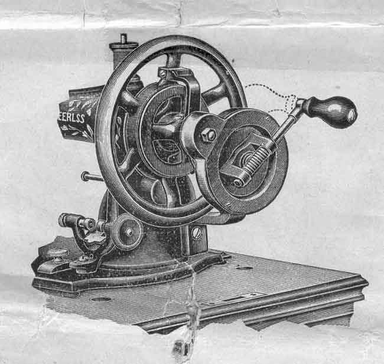

THE NEEDLEBAR
Online Manuals Section
Directions for Using the
New White Peerless Sewing Machine
Manufactured by the White Sewing Machine Company,
Cleveland, Ohio, U.S.A.
Peerless "C"

Peerless Hand Machine "A"
with Iron Base

Our New Peerless Hand Attachment
The illustration herewith shows hand attachment in position ready for use; while the dotted lines show its position when cover is on. The change can be made by simply pressing down on handle and turning it to the right or left, as may be desired.
Peerless "B" Machine
With its Elegant Bent Wood Cover and Wood Base
Peerless "B" Machine
With Cover Removed
INSTRUCTIONS FOR USING THE WHITE
PEERLESS SEWING MACHINE
MANUFACTURED BY
THE WHITE SEWING MACHINE COMPANY,
Cleveland, Ohio, U.S.A.
Upon the principle that the best is always the cheapest, we manufacture the PEERLESS to meet the demand for Hand Machines. The years that it has now been upon the market have established for it a reputation as a Hand Machine, equaling comparatively that of the World Renowned "White Sewing Machine," which for durability of construction, light running and noiseless qualities and elegant finish is without an equal in the world to-day as a treadle machine.
WHITE SEWING MACHINE CO.
TO OPERATE THE MACHINE
Raise the presser foot with the lever, remove the slide over the shuttle, and take out the shuttle; then start the machine by turning crank from you, and continue until you accustom yourself to a regular and easy motion of the machine. Then place a piece of cloth between the feed and the presser foot; let the presser foot down upon it and operate the machine in this way until you are accustomed to guiding the material in whatever direction you may desire.
NOTES
Do not run the machine with the presser foot down on the feed and no cloth between the two.
Do not pull the cloth to or from you in such a manner as to bend the needle.
Do not attempt to adjust the machine unless its sewing qualities are impaired, and not then unless you are perfectly familiar with its principles and mechanism. Any unskilled person attempting to adjust or repair any machine will often do greater injury than years of ordinary wear would produce.
TO THREAD THE MACHINE
Place the spool of thread on spool standard; pass the thread under pin and back of check spring washer No. 2. Now take the thread in your left hand and pass it down under point No. 3, moving your hand from you when passing under point 3; then up through slot in end of take-up No. 4, then through slot No. 5 in end of needle bar to needle, passing the thread through eye of needle from left to right, drawing two or three inches through.
THE TENSION
In illustration above, No. 6 represents the Tension Regulator and Indicator for the upper thread, an entirely new and useful device. The half circle is marked with a scale running from 1 to 8, with the word "loose" at figure 1 and "tight" at No. 8. No. 1 being the slack and No. 8 the tight tension.
TO REGULATE THE TENSION
To loosen the tension, turn the thumbscrew on dial No. 6 to the left, which will move the pointer towards figure 1. To tighten it, turn to the right, moving the pointer towards figure 8. By this means the same tension can always be duplicated, thus obviating the necessity of experimental trials, as is the case with other machines. If a tight tension is desired, both upper and under threads must necessarily be tight. If the upper thread is tight and the lower thread loose, the upper thread will be drawn to the top, thus:If the lower thread is too tight, it will be drawn straight on the bottom of goods thus: When you desire the goods to look alike on both sides, and be elastic, balance the tension thus:
TO CHANGE THE LENGTH OF STITCH
The stitch regulator is located at the right end of machine in front of arm; the dial is marked with a scale from 0 to 9, representing the limit of stitch, No. 0 being the shortest, and No. 9 the longest. To regulate the length of stitch, loosen the thumb screw and place indicator at the number required, from you to shorten, and towards you to lengthen the stitch, and then tighten the thumb screw again to hold it in position; by this means the same length of stitch can always be duplicated, thus obviating the necessity of experimental trials, as is the case with other machines.
The length of stitch should be governed by the size of the thread; the coarser the thread the longer the stitch.
TO THREAD THE SHUTTLE
Take the shuttle in the left hand, the point toward you, holding it as shown in illustration; drop the bobbin into the shuttle so that the thread will unwind from the right hand side of the bobbin; pass the thread into slot, holding thread slightly taut by pressure of left fore-finger upon end of bobbin, now draw the thread toward you from position 1 to 2, release the pressure on bobbin soon as the thread comes against the lip of shuttle spring and it will readily draw under it.
Then pass the thread to the right and down, back under both shuttle springs and again holding the thread taut as before, tighten the thread by drawing straight toward heel of shuttle to position 3 until the thread passes under the other lip of shuttle spring. The shuttle is then ready for use.
TO REMOVE THE SHUTTLE
Open the front shuttle-slide to take the shuttle from the machine. Do not undertake to turn the machine back on its hinges for oiling with the rear shuttle slide partly pulled out.
TO COMMENCE WORK
In threading the needle and shuttle respectively, you should leave an end of thread about two inches in length to each. Hold the end of the upper thread loosely in the left hand, and with the right hand gently revolve the fly-wheel until the needle passes to its lowest point and returns, when if it is set properly, a loop will be formed through which the shuttle will pass, and as the needle ascends, it will draw up the lower of shuttle thread. Now see that the shuttle sides are both closed over the shuttle, and the machine is ready for practical operation.
TO REMOVE THE WORK
Stop the machine when the needle is at its highest point; raise the presser-foot with the lifter; then take hold of your work with your left hand and pull it directly from you, keeping the top thread in the slot of the presser-foot, which will prevent bending the needle. Cut the threads close to the cloth, which will leave the ends projecting from needle and shuttle preparatory to commencing work again.
KEEP THE MACHINE WELL OILED
If the machine is dirty or gummed up with poor oil, clean it off by the use of spirits of turpentine or kerosene, then wipe dry and apply fine sperm oil.
Keep the inside working parts thoroughly oiled. In addition to the oil holes, the upper part of the machine should be carefully oiled on the needle bar; also the bearings of the bobbin winder should be kept constantly oiled. To oil the underside, turn the machine back on its hinges, and oil all bearings.
Use only the best quality of sperm oil, and whenever you oil the machine, work it a little to distribute the oil, and then, after standing a few moments, take a soft cloth and clean the superfluous oil from the japanned parts of the machine, also from the needle bar.
Keep the shuttle and its race slightly oiled.
TO SET THE NEEDLE
Raise the needle bar to its highest point; loosen the thumb screw and press it to the left to permit the shank of the needle to pass up between the clamp and needle bar as far as it will go - flat side to the right - the needle being flattened on one side so it will set itself perfectly, then fasten securely by tightening thumb-screw.
The needle when descending, should pass central in the needle-hole from front to rear, but a little nearer to the right than to the left of the hole as it prevents the needle from glancing into the race and being caught by the shuttle; if properly set, the point of the shuttle should enter the largest part of loop formed with the thread.
NEEDLES AND THREAD TO BE USED
The most important consideration is to buy and use perfect needles - not bent, or blunt points. WE PARTICULARLY REQUEST OUR DEALERS AND THEIR CUSTOMERS TO BUY THEIR NEEDLES AND OILS FROM US.
The size of the needle should conform to the size of the thread, and both be suitable to the material to be sewed. Use as fine a needle as will permit the thread to pass freely through the eye.
A No. 1 needle may be used for all kinds of ordinary family sewing, where thread from numbers 50 to 80 is used; there is seldom a necessity of using a coarser cotton than No. 30, because every stitch made by a sewing machine is just double as strong as one by hand. In general sewing use the same size of thread above as below.
The following index will show the size of needle, thread and silk to be used.
150
to 300 |
000 |
00 |
90
to 150 |
00 |
00 |
70
to 90 |
0 |
0 |
50
to 70 |
A
& B |
1 |
30
to 50 |
C |
2 |
20
to 30 |
D |
3 |
8
to 20 |
E
& F |
For leather, use a twist pointed needle. For colored thread, use needles one size larger than given in index above.
TO FILL THE BOBBIN WITH THREAD
To Wind Bobbin - Take hold of bobbin winder and turn it to position, that is so that the rubber pulley comes in contact with the wheel, slip the clutch out of wheel so that wheel will revolve without running machine; place bobbin in winder, and spool of thread on spool standard, pinch the end of thread between the right hand end of bobbin and winder, and with left hand pass thread up back, and over small grooved pulley on the curved shaft at top of winder, and down through slotted hole at bottom of frame in front of bobbin winder; raise spring pad to rest against bobbin ; now proceed to wind by turning wheel as if sewing, and the bobbin will wind itself automatically as smooth as a spool of silk. Should the thread change direction at any time when filling the bobbin, pay no attention to it, except to see that the curved shaft is free from dirt or thickened oil, and in the next layer it will regulate itself all right.
Thread
Do not use poor thread. You must not expect to make a nice, smooth stitch with cheap uneven thread.
EXPLANATION OF DIFFICULTIES
that Sometimes Occur with Beginners
If the upper thread breaks, it may be caused by the needle not being properly set, or the machine not threaded correctly, or the upper tension too tight, or the thread uneven and the needle too small for it, or the needle eye too sharp, or the presser-foot attached to the machine so that needle rubs it in passing.
If the under thread breaks, it may be caused by the shuttle being improperly threaded, or too much tension upon it, or by the bobbin being wound too full, so that the thread slips over the ends of the bobbin in the shuttle, or by the thread being caught in the shuttle sides.
If the needle breaks, it is more than likely your own fault, caused by pulling the goods to or from you in such a manner that the needle strikes the throat-plate and is bound to break. The needle may, however, break in trying to sew extraordinary heavy seams when the pressure on the presser-foot is not heavy enough.
To create more pressure upon the goods turn the presser-bar nut on top of presser-bar to the right; to decrease the pressure turn it to the left. If it makes loop stitches, it is most sure to be caused by too loose tension both top and bottom.
If the machine skips stitches, the needle is either bent or not in the right position.
If the stitches are not even, it may be caused by the presser-foot not resting evenly upon the fabric sewed, or by the feed not being high enough, or by the stitch being too short, or by pulling the cloth, or by using too fine a needle with too coarse or uneven thread.
- - - o o o 0 o o o - - -
To Online Manuals Index | To Main Index